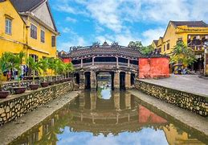

Ba Na - Chua Mountain tourist area belongs to Hoa Vang, Da Nang, it is far about 50 meters from the central city to the west. Located on the high of 1.487 meters above sea level, the temperature of this place is cool, the average temperature in the summer is about 180C, Ba Na - Chua Mountain is an ideal eco - tourism in the Central Vietnam. In order to step into Ba Na top, tourists should pass through 15 kilometers. This terrain is considered as small highland. Tourists not only enjoy fresh air but also contemplate the beautiful scenery.
In addition, tourists can also enjoy the large space of Da Nang city, Vung Thung bay, Son Tra peninsula, My Khe beach, Ngu Hanh Son, Thu Bon River, Cham Island. Ba Na has various flora and fauna. In the old-growth forest, there includes 256 species of fauna, 61 species of animal, 178 species of birds and 17 species of reptile. The flora includes 543 species. Besides, Ba Na has many rare animals such as: Crested Argus, Asian Black Bear, northern buffed-cheeked gibbon…
In 1986, Ba Na was recognized as natural reserve area, in which tropical forest and rare animals are protected. At the beginning of the 20th century, in order to serve the French's vacation in the Central Vietnam, many hotels, villas were built along mountain side, Nui Mountain and Ba Na hill. After the war, this place was destroyed. Da Nang has recently restored and remodeled some ancient French villas, Buddhistical cultural area, hotels, bars…
In 1999 the old town was declared a World Heritage Site by UNESCO as a well-preserved example of a Southeast Asian trading port of the 15th to 19th centuries, with buildings that display a blend of local and foreign influences. According to the UNESCO Impact Report 2008 on Hội An, tourism has brought changes to the area which are not sustainable without mitigation. Owing to the increased number of tourists visiting Hoi An a variety of activities are emerging that allow guests to get out of the old quarter and explore by motorbike, bicycle, kayak, or motorboat. The Thu Bon River is still essential to the region more than 500 years after António de Faria first navigated it and it remains an essential form of food production and transport. As such kayak and motorboat rides are becoming an increasingly common tourist activity. This longtime trading port city offers a distinctive regional cuisine that blends centuries of cultural influences from East and Southeast Asia. Hoi An hosts a number of cooking classes where tourists can learn to make cao lầu or braised spiced pork noodle, a signature dish of the city.
Old Town Hội An, the city's historic district, is recognized as an exceptionally well-preserved example of a Southeast Asian trading port dating from the 15th to the 19th century, its buildings and street plan reflecting a blend of indigenous and foreign influences. Prominent in the city's old town, is its covered "Japanese Bridge", dating to the 16th-17th century.
The Hoi An wreck, a shipwreck from the mid- to late-fifteenth century, was discovered off the coast of the city in the 1990s. A few years later, it was excavated; thousands of ceramic artefacts were discovered. Another attraction is the Hoi An Lantern Full Moon Festival[19] taking place every full moon cycle. The celebrations honour the ancestors. People exchange flowers, lanterns, candles, and fruits for prosperity and good fortune. The city has four museums highlighting the history of the region.
These museums are managed by the Hoi An Center for Cultural Heritage Management and Preservation. The Faifo Coffee house has an open air rooftop that has become a particularly popular location for Asian tourists to stop for well dressed selfies and posed photos. In 2019, Hoi An was listed as one of Vietnam's key culture-based tourist areas where rampant tourism growth 'threatens the sustainability". Excessive tourism in the past has also damaged the eco-system of Chàm Islands-Hội An Marine Protected Area
The city has four museums highlighting the history of the region. These museums are managed by the Hoi An Center for Cultural Heritage Management and Preservation. Entrance to the museum is permitted with a Hoi An Entrance Ticket. The Museum of History and Culture, at 13 Nguyen Hue St, was originally a pagoda, built in the 17th century by Minh Huong villagers to worship the Guanyin, and is adjacent to the Guan Yu temple. It contains original relics from the Sa Huynh, Champa, Dai Viet and Dai Nam periods, tracing the history of Hoi An's inhabitants from its earliest settlers through to French colonial times. The Hoi An Folklore Museum, at 33 Nguyen Thai Hoc Street, was opened in 2005, and is the largest two-storey wooden building in the old town, at 57m long and 9m wide, with fronts at Nguyen Thai Hoc St and Bach Dang St. On the second floor, there are 490 artifacts, organised into four areas: plastic folk arts, performing folk arts, traditional occupations and artifacts related to the daily life of Hoi An residents.
The Museum of Trade Ceramics is located at 80 Tran Phu Street, and was established in 1995, in a restored wooden building, originally built around 1858. The items originating from Persia, China, Thailand, India and other countries are proof of the importance of Hội An as a major trading port in South East Asia. The Museum of Sa Huỳnh Culture, is located at 149 Tran Phu Street. Established in 1994, this museum displays a collection of over 200 artifacts from the Sa Huỳnh culture—considered to be the original settlers on the Hội An site—dating to over 2000 years ago. This museum is considered to be the most unusual collection of Sa Huỳnh artefacts in Vietnam. The Precious Heritage Museum is located at 26 Phan Boi Chau. It includes a 250m2 display of photos and artifacts collected by Réhahn during the past 5 years of the French photographer's explorations of Vietnam.